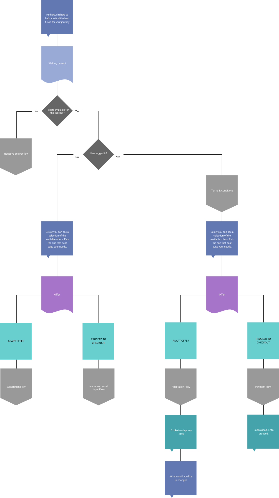

Wegfinder
Wegfinder is a mobility platform, what makes travelling from A to B easier. All transport options are nearby available. Via in-app chat interface is the ticket buying possible.
Overview
Wegfinder is a mobility platform, what makes travelling from A to B easier. All transport options are nearby available. Via in-app chat interface is the ticket buying possible.
We used flowcharts to descripe both back end processes and user task flows. They represent all dynamic changes in the app.
Using chatbot for purchaising tickets create a great differentation from the competitors. It is very important to use only short messages, because it promts the user to act immediately. This conversations increase loyalty and engagement, and reinforce brand personality.
I had opportunity to create prototypes for user testings. It is an important part to get feedbacks from possible users at the beginning of the design process. The main usecase is to make the ticket purchasing as quick as possible.